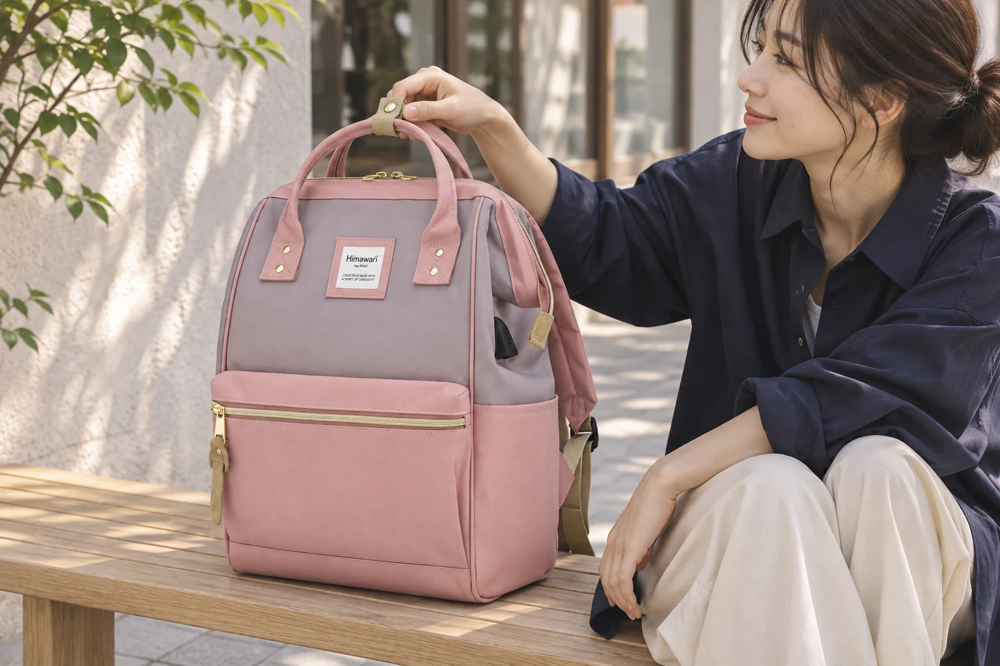
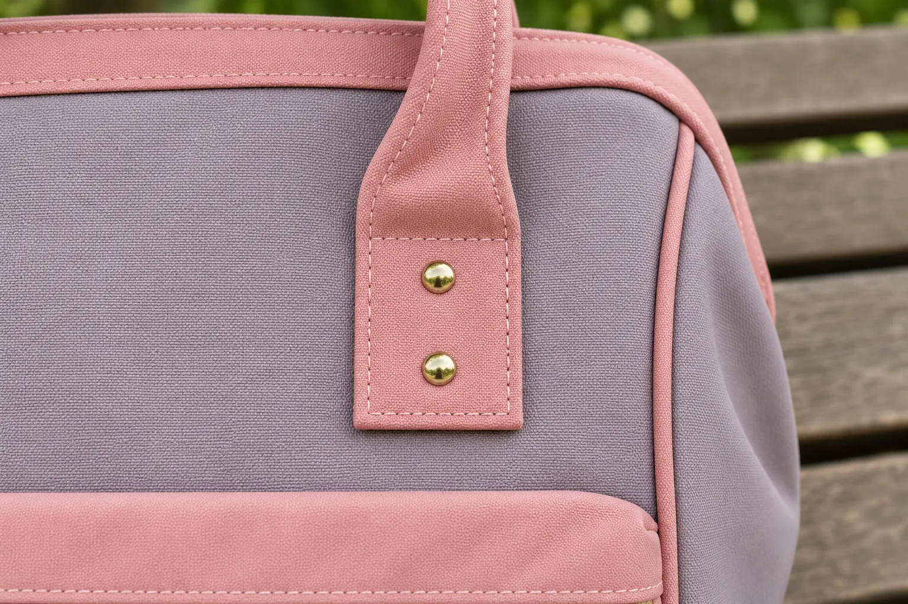
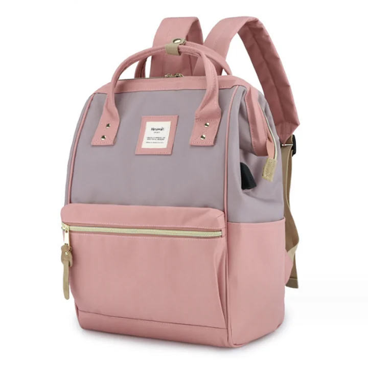

백팩을 들 때 손잡이 한쪽만 당겨진다면

No.9001 핑크그레이를 정면에서 보면 분홍색 손잡이의 양 끝이 회색 몸판 위로 내려옵니다. 가방을 들기 전에 작은 금색 부품이 붙은 두 자리를 비교해 보세요. 한쪽 천만 팽팽하면 먼저 무게를 의심하기 쉽습니다. 손잡이를 어디서 잡았는지나 가방 밑이 어딘가에 걸려 있는지에 따라서도 모양은 달라집니다. 손잡이를 한 번 더 당기기 전에 가방을 받쳐 놓고 하중이 없는 모습을 살핍니다.
빈 가방을 집어 들 때
바닥 전체를 탁자에 내려놓고 고정 부위 양쪽을 봅니다. 손으로 눌린 쪽에는 사선 주름이 남아도 다른 쪽은 평평할 수 있습니다. 손잡이 천의 주름만으로 고정이 풀렸는지는 알기 어렵습니다. 앞에서 보이는 양쪽 고정부를 비교해 보세요. 원단과 고정부 사이가 벌어졌는지 살피고 봉제선이 드러나는 폭에도 차이가 있는지 봅니다. 손잡이를 눕혔다 다시 세우고도 벌어진 끝이 같은 자리에 있으면 가까이 찍어 두면 됩니다.
두 손잡이를 함께 잡을 때 손이 닿는 위치를 봅니다. 손을 중앙에서 옆으로 옮겨 보세요. 몸판이 기울면서 손잡이 천의 각도도 바뀝니다. 바닥을 떼기 전 손을 놓고 다시 중앙을 잡아 보세요. 옮겨 잡을 때마다 팽팽한 쪽이 바뀌나요? 손을 놓고도 같은 고정부에 틈이 남는지 비교할 수 있습니다. 손잡이를 시험한다며 가방을 공중에서 흔들 필요는 없습니다. 빈 가방을 살펴본 결과만으로 무거운 짐을 담았을 때의 내구성을 판단하기는 어렵습니다.

짐을 담은 가방을 책상 아래에서 꺼낼 때
가방 바닥이 의자 다리에 닿을 때가 있습니다. 위쪽만 잡아당기면 손과 가방이 다른 방향으로 움직입니다. 발치가 보이는 쪽으로 몸을 돌리세요. 가방 옆이나 바닥을 받쳐 걸린 부분부터 뺍니다. 포켓이 의자 프레임에서 빠져나오면 손잡이를 쥐세요. 손잡이의 어느 부분을 잡았는지 그때 확인하기 쉽습니다. 물병이나 두꺼운 책이 한쪽에 몰렸다면 짐의 위치를 바꾼 전후의 기울기를 비교할 수 있습니다. 기울어진 채 들린 모습만 보고 한쪽 고정이 풀렸다고 결론 내리기엔 이릅니다.
벤치에서 가방을 한 뼘도 채 띄우지 않았는데 손잡이 두 개가 손에 다르게 잡힐 때도 있습니다. 손잡이 길이를 의심하기 전에 두 손잡이가 같은 방향으로 서 있었는지 봅니다. 하나는 완전히 접혀 있었고 다른 하나는 손을 뻗기 전에 이미 세워져 있었을 수 있습니다. 손잡이 두 개를 모은 뒤 앞판과 뒷판 어느 쪽이 먼저 따라오는지 보세요. 잡는 방식에 따른 차이를 확인하기 쉽습니다. 손잡이의 연결 방식은 모델이나 생산 시기에 따라 다를 수 있습니다. 내 가방의 구조는 색상까지 같은 제품 사진에서 비교하세요.
수선 문의가 필요할 때 남길 사진
잠깐 이동할 때마다 한 손에 여러 물건을 쥐는 사람이라면 가방을 드는 김에 확인하기가 어렵습니다. 휴대전화를 쥔 채 가방을 들기도 합니다. 남은 손가락만 손잡이에 넣으면 잡은 위치가 가운데에서 끝 쪽으로 밀립니다. 휴대전화를 먼저 내려놓고 두 손잡이가 손 안으로 들어오는지 확인해 보세요. 손잡이를 모으는 탭부터 누르기 쉽습니다. 그 전에 뒤쪽 손잡이까지 들어왔는지 살핍니다. 가방 바닥을 받쳐 놓고 탭 아래에 들어간 끈을 확인해 보세요. 손이 실제로 어느 손잡이를 쥐었는지 여기서 구분할 수 있습니다. 줄이 등을 향해 접혀 잘 안 보일 때에는 가방 위를 내려다보면 됩니다.
가방을 내려놓아 보세요. 끊어진 실처럼 끄트머리가 남거나 고정부가 몸판에서 떨어져 보이면 현재 모양을 사진으로 남깁니다. 더 세게 당겨 볼 필요는 없습니다. 정면 사진 한 장에는 좌우 고정부와 가방의 색을 담습니다. 더 가까운 사진에는 손잡이 끝과 그 아래 원단이 맞닿는 선을 함께 넣습니다. 사진 두 장의 방향이 반대라면 어느 쪽인지 메모에 표시합니다. 검은 그림자가 길어져 틈처럼 보이나요? 빛이 들어오는 쪽을 바꿔 찍으면 두 사진을 비교할 수 있습니다.
문의에는 처음 알아챈 동작을 짧게 적습니다. 예를 들어 ‘짐을 옮기다가 발견’, ‘바닥에 두어도 왼쪽 끝에 틈이 보임’이면 무엇을 재현할지 분명합니다. 사진에 금속 부품이 두 개 보인다고 그 안쪽의 조직이나 고정 방식을 확정할 수는 없습니다. 드러난 부품을 돌리거나 천 사이를 벌리기 전에 수선 가능 여부와 사진을 더 보내야 할 위치부터 물어보세요. 손잡이 끝에 생긴 주름인지 고정부의 틈인지 말로 설명하기 어렵다면 건드리지 않은 상태의 사진을 함께 보냅니다.

제품 사진에서 미리 비교할 것
No.9001 핑크그레이의 제조사 외부 치수는 가로 28cm, 세로 40cm, 폭 17cm입니다. 공개 원본에는 분홍색 손잡이 앞 고정부와 그 사이 라벨이 보입니다. 이 치수로는 가방 본체의 크기를 비교합니다. 손잡이 밑 여유와 감당할 수 있는 무게는 별도로 확인하세요. 상단 전체가 잘린 사진으로는 고정부가 어디에 있는지 찾기 어렵습니다. 가방을 놓아 둔 정면 사진과 손잡이를 세운 측면 사진을 요청해 보세요. 두 사진에서 같은 봉제 끝을 찾아보세요. 구입 뒤에도 내 가방의 상태를 기록할 때 기준으로 삼을 수 있습니다.
손잡이를 자주 쓰는 사람에게는 들 수 있느냐만큼 꺼내는 순서가 중요합니다. 가방이 놓일 책상과 의자, 짐을 넣을 자리, 손이 먼저 닿을 쪽을 떠올려 보세요. 매번 의자 밑을 비틀어 꺼내야 한다면 손잡이 자체를 바꾸기 전에 놓는 방향을 바꿔 볼 만합니다. 가방을 다시 내려놓으면 양쪽 고정부를 볼 수 있습니다. 처음 발견한 주름이 사진과 같은 자리에 남아 있나요? 가방을 다시 내려놓아도 그 부위가 같은 모양인지 봅니다. 한 번 기울어진 상황과 구분하기 쉽습니다.